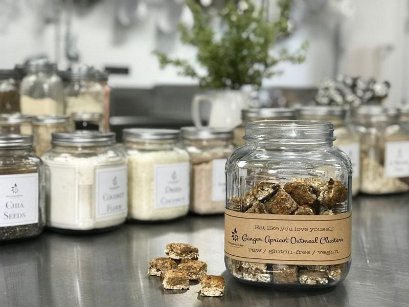

Ginger Apricot Oatmeal Clusters
raw / vegan / gluten-free / no-added sugar
These Ginger Apricot Oatmeal Chews are belly-warming, moist, n’ chewy, and kissed with the light sweetness of dried apricots. Oatmeal cookies and I have a long history, let me share with you when it all began…

I have always been a huge fan of oatmeal cookies. I will never forget the first time that I made them on my own. My mom had to leave for a few months to take care of my great-grandmother who was passing away from cancer. So at the age of 13, my dad and I were left alone to fend for ourselves.
One day, I thought I would surprise my dad with a batch of chocolate chip cookies, but instead of chocolate chips, I used M&M’s. I am not sure what I did wrong but the colors from the M&M’s melted and oozed together, making the cookies look like piles of… not-so-appetizing-cookies?
The next night, I thought I would redeem myself and try my hand at oatmeal cookies. I pulled out my mother’s Betty Crocker cookbook and thumbed through it till I found the recipe for oatmeal cookies. I read through the ingredients, pulling each one out of the pantry and setting it on the counter.
I then read the directions and prepared my cookie sheet by greasing it up. Eeezy-peezy! I was ready to go. After greasing the pan and placing the cookies on the cookie sheet, I slid them into the oven and shut the door. About 10 minutes into cooking them, I cracked the oven door to see how they were doing… hmm, they must need to be flipped, I thought to myself?
I reread the instructions and nowhere did it mention flipping the cookies. Surely, this was a typo. How could they skip such a vital step? So, I reached into the oven with my long-handled spatula and carefully flipped the cookies. I shut the door, ten more minutes passed – flip… they still weren’t done, ten more minutes – flip….ten more minutes – flip and ten more minutes passed by – flip. I just couldn’t understand why they weren’t getting nice and brown.
I felt defeated… two nights in a row my cookies were a flop. I shut the door to the oven and turned it off. I didn’t want to even look at them anymore, I would deal with them later. The next day, my dad opened the oven to bake a pot pie. He saw my cookie sheet and pulled it out onto the counter.
The look of bewilderment was on his face as he scratched his head. “Amie Sue, what is this?” … “Dad, those were some oatmeal cookies that I tried to make for you last night, but they didn’t turn out.”… “What is all this white stuff that they are encased with?” I peered around his shoulder with both of us staring down at the pan. I simply replied, “Oh, that just the baking grease that I used to oil the pan dad.” Like, duh, dad. “But I honestly don’t know what I did wrong with this recipe.”
I used all the right ingredients, and I followed the instructions. It said to oil the pan before placing the cookies on the pan so they wouldn’t stick and then bake for 15 minutes or until golden brown.” My dad just laughed as he poked at the solid, 1/2” sheet of Crisco oil with small cookie blobs nestled down in it. “I think I know what went wrong. You were just supposed to grease the pan with a thin coating, not fill the pan with oil.” Duh! Oy-Vey. Where is Betty Crocker’s email address? I need to contact her and tell her to clarify those directions.
They say that a journey of a thousand miles begins with a single step… my journey started with oatmeal cookies floating in oil… my my my how times have changed. :) So needless to say, everytime I work with oats, I always remember those greasy oatmeal cookies. I hope you enjoy these fun little chews. Blessings, amie sue
Ingredients:
yields 67 clusters
- 3 cups (320 g) rolled, gluten-free oats, soaked & dehydrated
- 1 1/2 cups (164 g) oats, floured
- 2 cup (312 g) dried apricots, diced
- 1 cup (122 g) pecans, soaked & dehydrated, chopped
- 1 1/2 tsp (4 g) ground Ceylon cinnamon
- 1 1/2 tsp (4 g) ginger powder
- 1/4 tsp (1 g) Himalayan pink salt
- 3 ripe (378 g) bananas
- 1/4 cup (63 g) water
- 2 tsp (12 g) ginger fresh, grated
- 1 tsp (5 g) vanilla extract
- 1/2 tsp (2 g) liquid stevia
Optional
- 2 bananas
- Coconut Crystals
Preparation:
- In a large mixing bowl, combine the oats, oat flour, apricots, pecans, cinnamon, ginger, and salt. Toss together, so all the spices get distributed.
- In the food processor, combine the bananas, water, fresh ginger, vanilla, and stevia. Process until the bananas are pureed.
- Pour the banana puree into the mixing bowl with the oats and other dry ingredients. With your hands, thoroughly mix everything.
- Place the dough on a cutting board, pressing it firmly together into a ball shape.
- Place a piece of plastic wrap over the top and roll the dough batter out until about 1/2″ thick.
- With a straight edge ruler or knife, cut the batter into small square pieces.
- The outer pieces won’t be perfectly squared, so re-gather the batter, press into a ball and repeat the process until it’s all used up.
Optional step
- Process 2 bananas into a puree in the food processor. Pour into a bowl.
- Dip the top of each square into the banana puree and set on the mesh dehydrator sheet.
- Sprinkle coconut crystals on top. You can use any dry sweetener for this.
Drying
- Dehydrate for 1 hour at 145 degrees, then decrease to 115 degrees (F) for 4-6 hours. They should be dry on the outside and a bit moist on the inside.
- Store in an airtight container on the counter for 5-7 days.
Questions you may have…
- Amie Sue, is it possible to purchase raw oats? Yes, indeed. Please read here where can order them (here).
- I always heard that oats contained gluten. Is this true? No, but you need to be aware of the oats that you buy. Please read (here).
- Is it important to soak and dehydrate oats? I think it is, read (here) as to why.
- Can I use regular cooking rolled oats in these recipes instead of raw oats? Yes, that is your call. I still recommend the soaking process.
Culinary Explanations:
- Why do I start the dehydrator at 145 degrees (F)? Click (here) to learn the reason behind this.
- When working with fresh ingredients, it is important to taste test as you build a recipe. Learn why (here).
- Don’t own a dehydrator? Learn how to use your oven (here). I do however truly believe that it is a worthwhile investment. Click (here) to learn what I use.
© AmieSue.com